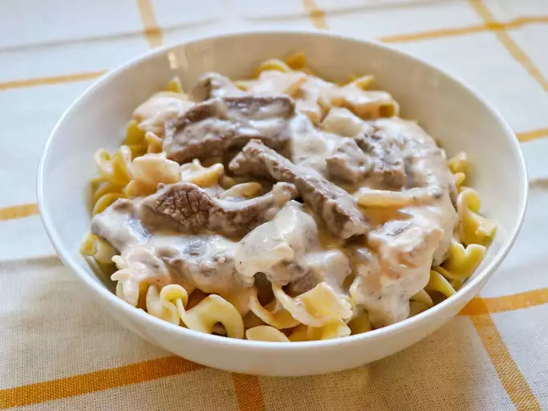

Beef Stroganoff With Steak
Description
Beef stroganoff is typically a rich dish, yet it's quite simple to make with steak. This recipe uses nonfat sour cream to help cut down on the fat content.
Ingredients
- 1 pound sirloin steak, cut into bite size strips
- 1 onion, chopped
- 1 ½ tablespoons all-purpose flour
- ¾ teaspoon salt
- ¼ teaspoon paprika
- ⅛ teaspoon ground black pepper
- 1 (10.75 ounce) can condensed cream of mushroom soup
- 1 ¼ cups fat free sour cream
- 1 (8 ounce) package egg noodles
Steps To Success
- Brown steak strips in a large skillet over medium-high heat; drain excess fat. Add onion and sauté for 5 minutes, or until tender. Stir in flour, salt, paprika, and ground black pepper.
- Stir in soup; reduce heat to medium-low and simmer for 15 minutes. Stir in sour cream.
- Prepare egg noodles according to package directions. Serve beef stroganoff over egg noodles.
Click here to go back to the main page